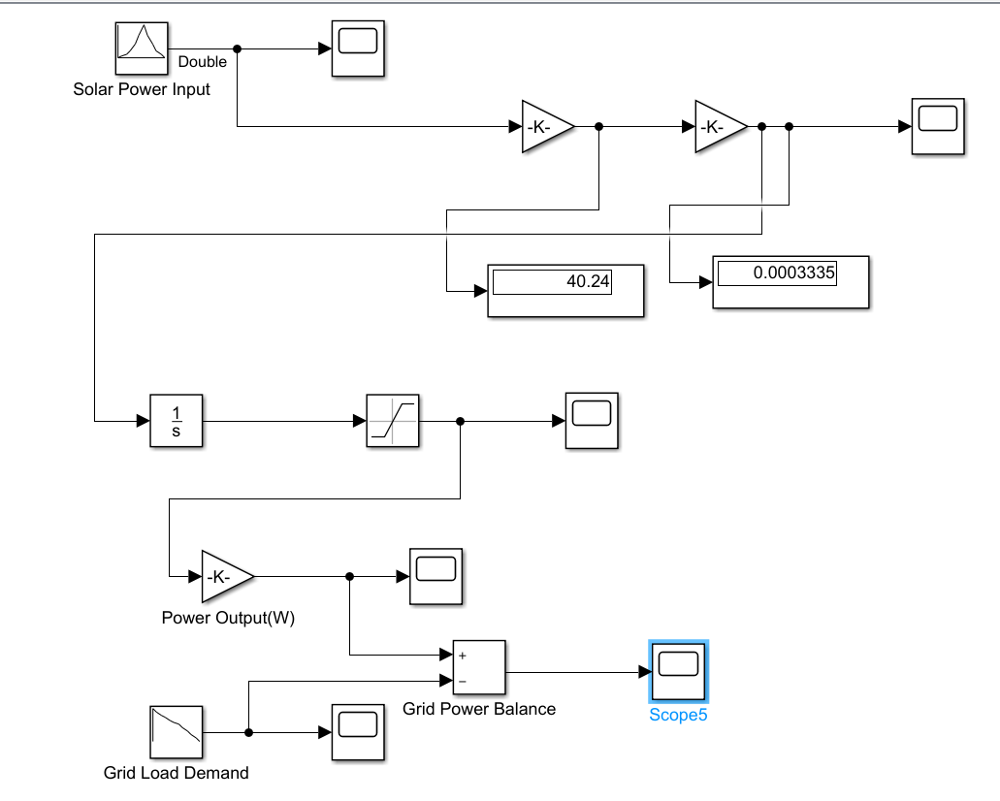
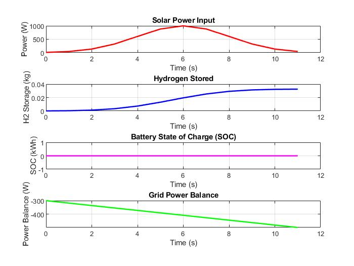

OBJECTIVE 01
Solar Power Input
Represent the solar power profile used as the input signal to the model.
A MATLAB/Simulink model exploring the conversion of solar power into hydrogen, hydrogen storage, fuel-cell electricity generation, and the relationship between generated power and grid load demand.
Renewable energy sources such as solar power can vary with environmental conditions. Hydrogen energy storage offers a way to represent the conversion of available electrical energy into hydrogen and its later conversion back into electricity.
This simulation models a solar power input, hydrogen production and storage calculations, a fuel-cell power output, and grid load demand. A power-balance signal is used to compare the generated output with the demand represented in the model.
The block diagram shows the model's signal flow from the solar power input through the hydrogen-related calculations and output-power path. The model also includes a grid load demand signal and a power-balance calculation.

Represent the solar power profile used as the input signal to the model.
Model hydrogen production using the configured electrolysis-related calculation.
Represent the accumulation of the calculated hydrogen quantity through the storage-related signal path.
Compare the model's power-output signal with the grid-load-demand signal.
A solar power input signal provides the starting point for the model's calculations.
Gain blocks and configured constants represent the calculation path used for hydrogen production.
An integrator and downstream block represent the storage-related calculation in the model.
The output-power and load-demand signals are combined to calculate the model's power balance.
The following values were provided in the project description. Their exact units and implementation should be checked against the Simulink model.
| Parameter | Specified Value |
|---|---|
| Electrolysis voltage | 1.23 V |
| Faraday efficiency | 80% |
| Fuel-cell efficiency | 60% |
| Hydrogen energy density | 33.3 kWh/kg |
| Hydrogen storage capacity | 100 kg |
| Grid load demand range | 300–500 W |
The MATLAB/Simulink simulation produces four output graphs illustrating solar power input, hydrogen storage, battery state of charge, and grid power balance.

Figure 1: Simulation outputs of the hydrogen energy storage model.
Check the units, gain values, conversion equations, and signal scaling against the intended physical relationships.
Investigate using measured solar-generation profiles instead of an idealised input signal.
Explore combining hydrogen storage with battery energy storage in a future model.
Test the model using different load-demand profiles and operating conditions.